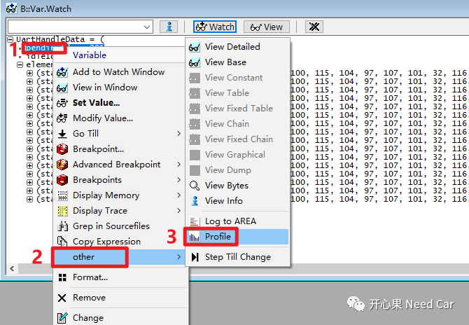
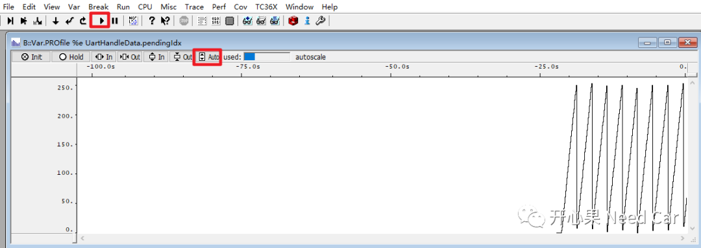
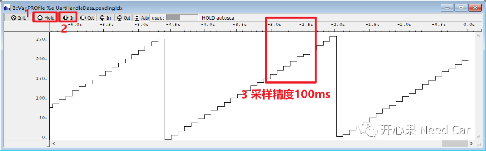
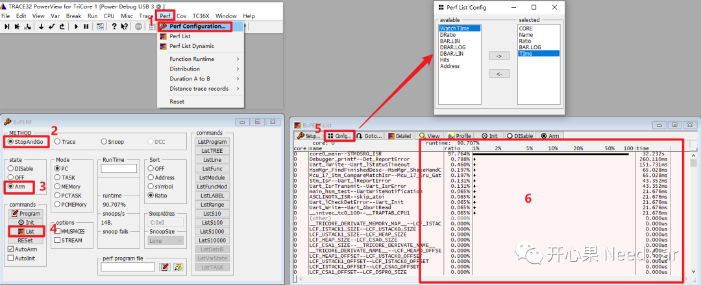
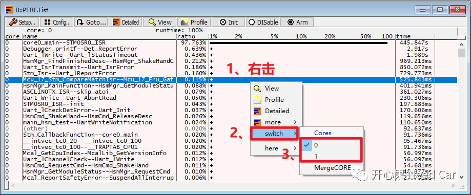

开心果 Need Car · 2024-01-15T07:07:00+08:00 · 微信原文
工程开发，不仅仅考验我们对问题的认知和理解，而且，也考验着我们分析和解决问题的手段。基于认知和理解，我们去分析问题，而这个过程中，往往需要抓取所需数据，数据的获取自然脱离不了工具。面对不同的工程问题，需要使用不同的软/硬件工具去获取数据。本文，继续讨论TRACE32的一些基本使用技巧：
使用Profile分析数据变化趋势
Data.Load.*对应的Option选项
CPU负载测量
1、使用Profile分析数据变化趋势
（一）使用Profile观测内部变量变化
举例：观察内部变量UartHandleData.pendingIdx变化.
（1）操作如下：右击目标变量->other->Profile



2、Data.Load.*的Option选项
使用TRACE32脚本（*.cmm）下载程序时，会用到Data.Load.*命令，eg：Data.Load.Elf、Data.Load.IntelHex、Data.LOAD.auto等。
示例：
Data.LOAD.Elf ../myCode.elf /nocode当使用这些加载命令时，后面往往跟随Option选项，选项有很多，本文只讨论一些常用的Option选项。
NoCODE：只加载symbolic信息，不下载Code
NoClear：已经存在的symbols不用删除
其他的选项，可以参考使用手册。
3、CPU负载测量

（2）切换Core，右击监控面板->Switch->选择目标Core，如下所示：

提示：如上示例的采样，对PC（Program Counter）采样。
往期精彩回顾
CAN FD通信：数据段错误，错误帧的速率是500Kbps还是2Mbps？